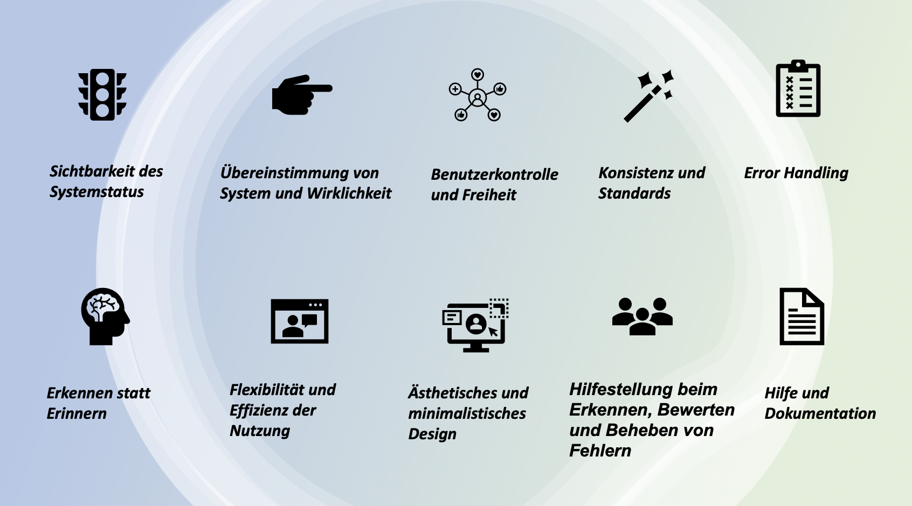

Remote-Usability-Studie für BigBlueButton
Durchführung der RUS
Heuristische Analyse
Um User Experience und User Interface eines Produktes objektiv bewerten zu können, werden die
10 Heuristiken (Heuristische Evaluationsmethode) nach Nielsen herangezogen.

Nr. |
Heuristik |
Erläuterung |
|---|---|---|
|
1 |
Sichtbarkeit des SystemstatusDas System informiert den Nutzer immer darüber, was gerade passiert – rechtzeitig und durch angemessenes Feedback. |
Der User kann die Benachrichtigung aktivieren oder deaktivieren. Das System zeigt (nur bei eigenständiger Aktivierung) Pop-Up-Nachrichten und ein Audio Warnton, wenn neue Teilnehmer den Raum betreten sowie Pop-Up- oder Audio Warnungen für den Chat. Erhält ein User eine Berechtigung für die Präsentation oder verlässt er den Raum, so wird ein Warnton abgespielt. Sobald die Konferenzzeit sich dem Ende zuneigt, wird ein Countdown in Minuten angezeigt. Beim Sprechen wird das Mikrofon-Button der User mit Wellen animiert. |
|
2 |
Übereinstimmung von System und WirklichkeitDas System spricht die Sprache des Nutzers – mit ihm vertrauten Wörtern, Phrasen und Konzepten. Entlehnt aus der echten Welt erscheinen Informationen in ihrer natürlichen und logischen Ordnung. |
Wenn ein User stummgeschaltet wird, folgt eine auditive Benachrichtigung “You are muted”. Diese Funktion unterbricht den Nutzer beim Zuhören. Der User kann die Sprache ändern, jedoch sind die Erklärungen/Tutorials nur auf Englisch verfügbar. |
|
3 |
Benutzerkontrolle und FreiheitNutzer führen Aktionen oft unbeabsichtigt durch. Auswege wie „Rückgängig”, „Wiederholen” und „ESC” sind deshalb immer möglich und sichtbar. |
Bei Auswahl der Option “Zuhören” ist eine Änderung nicht mehr möglich. Der User muss den Chatraum verlassen und wieder ein Echotest ausführen. Der User kann nur einzelne Aktionen rückgängig machen. Das Radieren ist nicht möglich. Der Präsentator kann nur eine Datei auf dem Whiteboard importieren. Wird eine andere Datei hochgeladen, so wird die Alte ersetzt. Es gibt keine Speicherfunktion für das Whiteboard. Alle Objekte (z.B. Formen, Text, Markierungen etc.) können nachträglich nicht verändert werden. Die Qualität von einem Screen Sharing kann der User nicht anpassen. Wenn der User die Sitzung neu betritt, verliert er seine Rechte. Wenn der User mit der linken Maustaste auf einen Link im Chat klickt, fliegt er aus BBB raus und landet auf der entsprechenden Webseite. |
|
4 |
Konsistenz und StandardsNutzer müssen nicht überlegen, ob unterschiedliche Wörter, Situationen und Aktionen das Gleiche meinen. Die Konventionen des Betriebssystems werden eingehalten. |
Der User muss ein Echotest ausführen, um die Funktionalität von seinem Mikro und seibnen Kopfhörern zu testen. Der User hat mehrere Möglichkeiten sich stummzuschalten. Die Funktion “geteilte Notizen” ist leicht mit “öffentlichen Chat” zu verwechseln. |
|
5 |
Error Handling (*Fehlervermeidung)Das System vermeidet fehleranfällige Situationen oder warnt den Nutzer und lässt ihn die Aktion bestätigen. |
Es werden generell Fehlermeldungen angezeigt, wenn die Webcam zum Beispiel nicht funktioniert, die Internetverbindung instabil ist oder wenn der Bildschirm nicht freigegeben werden kann. |
|
6 |
Erkennen statt ErinnernDurch sichtbare Objekte, Aktionen und Optionen muss der Nutzer weniger im Gedächtnis behalten. Anleitungen zum Gebrauch des Systems sind sichtbar oder leicht zu erreichen. |
Das System ist schlicht gestaltet, grundlegende Funktionen sind gut sichtbar und einfach einzuprägen. Einzelne Funktionen sind jedoch versteckt. |
|
7 |
Flexibilität und Effizienz der NutzungKurzbefehle und andere Abkürzungen sind unsichtbar für Unerfahrene und beschleunigen bei fortgeschrittenen Nutzern die Bedienung. Zusätzlich sind häufige Aktionen individuell anpassbar. |
Der User kann Shortcuts benutzen. Dazu gibt es eine kurze Anleitung in tabellarischer Form unter "Einstellungen". Eine schwache WLAN-Verbindung kann Audiostörungen, eingefrorene Browser oder auch vereinzelte Verbindungsabbrüche verursachen, sodass eine Neueinwahl erforderlich ist. Aktuell ist BigBlueButton nicht mit allen Browsern kompatibel. |
|
8 |
Ästhetisches und minimalistisches DesignDialogfenster enthalten keine überflüssigen oder nur selten gebrauchten Informationen. Denn jede zusätzliche Information steht in Konkurrenz mit den relevanten Informationen und mindert deren Sichtbarkeit. |
Pop-Ups verdecken nur einen minimalen Bereich der Präsentation. Es gibt verschiedene Reiter für die Übersichtlichkeit. Es existiert eine übersichtliche Unterteilung von Funktionen (Nachricht, Öffentlicher Chat, Startraum). Es entstehen Probleme bei der Skalierung. Bestimmte Funktionen sind bei einer Minimierung vom Fenster nicht mehr sichtbar. Bestimmte Funktionen sind beim Eintreten gar nicht verfügbar. (z.B. geteilte Notizen oder öffentlicher Chat). |
|
9 |
Hilfestellung beim Erkennen, Bewerten und Beheben von FehlernFehlermeldungen sollten in klarer Sprache (kein Code) formuliert sein, das Problem exakt beschreiben und eine konstruktive Lösung vorschlagen. |
Um das Mikrofon auf seine Funktionalität zu überprüfen, wird ein Echotest durchgeführt. Der Nutzer hat die Möglichkeit, die Konferenz mit einem Mikrofon beizutreten oder der Konferenz nur zuzuhören. Die Auswahl der Funktion ist aber nicht mehr widerrufbar. Der User muss die Konferenz verlassen, um die Auswahl zu ändern. Bei Fehlermeldungen werden dem User Möglichkeit empfohlen, die Probleme zu behebn (z.B. den Browser wechseln). |
| 10 |
Hilfe und DokumentationDie Dokumentation enthält konkrete Schritte zur Ausführung und beschränkt sich auf das Wesentliche. |
Anfangs wird das Mikrofon überprüft. Bei Fehlern wird dem User die Möglichkeit angeboten, Einstellung vorzunhemen. |
Durchführung
Thema: Usability Test
Dauer: ca. 30-40 Min
benötigte Ressourcen: PC (Kamera, Mikrofon), stabile Internetverbindung, Zoom,
Email-Adresse
Hilfsmittel: Shortcuts
Hallo lieber Proband, liebe Probandin! Sie werden im Folgenden die notwendigen
Informationen bekommen, um einen Usability-Test durchzuführen. Es geht darum, ein
Open-Source-Webkonferenz-System namens “Big Blue Button” auszuwerten. Es
wird geprüft, an welchen Stellen Schwierigkeiten bei der Benutzung auftreten.
Besonders wichtig ist es zu wissen, dass das System getestet wird und nicht der/die
Benutzer*in selbst. Ziel des Tests ist es, möglichst viele Probleme zu finden. Es ist
erwünscht, dass sie während des Tests Fragen stellen und laut denken, da es
wichtig ist zu wissen, wo es Unklarheiten gibt. Der/die Testleiter*in kann antworten,
wenn Sie selbst mit dem Programm bzw. den Aufgaben nicht klarkommen.
Sie bekommen am Anfang allgemeine Fragen zu Ihrer Person gestellt. Des Weiteren
wird der/die Testleiter*in nach Ihrer Einverständniserklärung für die Aufnahme
Ihrer Stimme und Ihres Bildschirms fragen. Die aufgenommen Daten werden
ausschließlich für die Analyse im Rahmen der Lehrveranstaltung „Mensch-Maschine
Interaktion“ genutzt.
Der Usability-Test besteht aus einigen Aufgaben, für die eine Bearbeitungszeit von
20 Minuten vorgesehen ist und einem kurzen Interview (ca. 10 Minuten). In diesem sollen
Sie sich dazu äußern, welche Aspekte Ihnen gut und welche Ihnen weniger gut
gefallen haben, wo Sie Probleme hatten und wo Sie Ansätze für Verbesserungen
sehen. Es gibt keine richtigen oder falschen Antworten – nur Ihre persönliche Meinung
zählt!
Um uns die Arbeit zu erleichtern, werden wir die Testsitzung als Video aufnehmen.
Die Aufzeichnung wird nur den Testleitern und unserem Auftraggeber zugänglich
gemacht, um die Testergebnisse zu belegen. Die Aufzeichnung wird nicht
veröffentlicht.
Bitte lesen Sie die folgende Erklärung und unterschreiben Sie diese.
Viel Spaß bei dem BigBlueButton Usability-Test! :)
Testablauf
1. Klicke auf den Einladungslink um einem Meeting beizutreten.
2. Wähle "Mikrofon beitreten" und überprüfen sie anschließend bei dem Echotest, ob
ihr
Mikrofon funktioniert.
Hören Sie sich selbst, drücken sie den "Daumen-hoch" Button, andernfalls drücken sie
auf
"Daumen-runter" und wählen
sie ein funktionsfähiges Mikrofon aus.
1. Falls Ihr Mikrofon funktioniert, dann sagen Sie "Audio ist an" .
2. Falls Ihr Mikrofon nicht funktioniert, dann schreiben Sie im Öffentlichen Chat "Audio ist aus".
3. Setzen Sie nun Ihren Status auf “Glücklich ”. Als nächstes setzen Sie Ihren Status zurück.
4. Schalten Sie Ihr Mikrofon stumm und schalten Sie Ihre Webcam an.
5. Nutzen Sie die geteilten Notizen und erstellen Sie eine nummerierte Liste wie folgt:
Apfel
Birne
Orange
Mango
Dabei soll Apfel fett, Birne unterstrichen, Orange kursiv, Mango durchgestrichen sein. Exportieren Sie die Liste als PDF-Datei
6. Schreiben Sie in dem öffentlichen Chat: “Hallo ich wechsle jetzt zur Präsentator Rolle”.
7. Klicken Sie unten links auf dem Plus Button, um ein Präsentator zu werden.
Anschließend teilen Sie ein externes Video mit
dem URL-Link:
Youtube Link.
Beenden Sie danach das geteilte Video.
8. Benutzen Sie die Whiteboard-Werkzeuge:
a. Wechseln Sie zu einer neuen Folie (weißer Hintergrund)
b. Benutzen Sie den Stift und zeichnen Sie einen Smiley
c. Erstellen Sie mit der Strichdicke 6 eine blaue Ellipse
d. Erstellen sie ein Textfeld und schreiben Sie “Textfeld”
e. Nehmen Sie die Anmerkung zurück
f. Löschen sie nun alle Anmerkungen
9. Geben Sie Ihren Bildschirm frei und wählen Sie ein bestimmtes Fenster aus.
10. Klicken Sie unten links auf dem Plus Button und erstellen Sie eine Umfrage mit den vorgefertigten Antwortmöglichkeiten.
Nutzer
Die Testpersonen sind eine wichtige Grundlage für die Usability-Tests. Die ausgewählten Testpersonen sollten die Endbenutzer repräsentieren. Bei der Auswahl der Testpersonen ist auf jeden Fall darauf zu achten, dass diese die Zielgruppe repräsentieren. Ein weiterer Faktor ist auch bei der Wahl der Testpersonen, die gewählten Methoden zu berücksichtigen. Bei der Methode „Lautes Denken“ sollte darauf geachtet werden, dass die Personen sich gut und gerne äußern und nicht zu schüchtern sind. Für den Usability-Test BBB wurde die Anzahl der Testpersonen auf acht beschränkt, da die Testleiter eher eine qualitative Auswertung anstreben, um subjektive Meinungen zu bekommen. Die Unterteilung der Teilnehmer wurde so gewählt, dass sowohl Anfänger als auch Experten abgefragt werden, um ein breites Spektrum an Ergebnissen zu erhalten. In der Terminplanung wird jeder Testperson eine Nummer zugeteilt. In der Datenerhebung werden die Testpersonen anonymisiert und nur durch diese Nummer gekennzeichnet.
Wie viele Teilnehmer haben wir?
8 Teilnehmer
2 Experten/Studenten (BBB schon benutzen)
2 jüngere Leute die BBB neu benutzen
2 Lehrer/Dozenten
2 Homeoffice Mitarbeiter (Leiter und Angestellte vom Büro/Geschäft)
Datenerhebung
Das Erhebungsverfahren besteht aus einer Befragung bzw. einem Interview und einer Beobachtung bzw. eine Aufnahme des Bildschirms, somit kann auch ein visuelles Material für die Auswertung verwendet werden. Das Interview besteht grundsätzlich aus offenen Fragen, sodass keine Antwortmöglichkeiten vorgegeben sind. Es werden soziodemografische Daten erhoben (Alter, Beruf, Studienfach) sowie das Vorwissen des Probanden, z.B. Erfahrung mit ähnlichen Produkten abgefragt. Dies hilft die Zusammensetzung der befragten Personen zumindest nachträglich auswerten zu können. Der hauptsächliche Grund für die Entscheidung eines Interviewleitfaden ist, dass zum einen eine Spontanität bei der Beantwortung der Fragen herrscht, zum anderen die Reaktionen von den Probanden direkt erfasst werden können. Zudem lassen sich komplexe Thematiken durch Teilfragen herunterbrechen. Eine hohe Flexibilität bei der Gestaltung des Interviews ist auch gegeben, da die Reihenfolge nicht eingehalten werden muss.
Pre Test
Der endgültige Ablauf der Datenerfassung wurde stark von den Ergebnissen der zwei Vortests beeinflusst, der durch die Testleiter*innen in Zweiergruppen selbst durchgeführt wurde. Als Ergebnis des Vortests zeigten sich folgende Punkte: Eine Testdurchführung soll insgesamt nicht mehr als 40 Minuten überschreiten. Die Testleiter*innen sind während der Aufgabenbearbeitung für den Probanden verfügbar und falls Probleme auftreten, sind sie jederzeit ansprechbar. Aus Zeitgründen müssen die Testleiter*innen vorab Testunterlagen (Informationen zum Ablauf des Tests, Einverständniserklärung und die Aufgabenstellungen) erhalten, da ansonsten der Zeitverbrauch bis zur Aufgabenbearbeitung, bei der die Teilnehmer selbst aktiv werden können, zu groß wäre. Die Testleiter*innen sollten sich vor dem Testablauf vorbereiten, um mögliche Nutzungsprobleme zu erkennen. Außerdem stellen die Testleiter*innen sicher, dass alle Funktionen verfügbar sind. Des Weiteren wurde die Reihenfolge der Aufgaben angepasst.
Test Setting
Die Tests fanden vom 09.02 bis zum 11.02 über Zoom statt. Zu Beginn wurden Konferenzräume zur Verfügung gestellt. Die eigentliche Kommunikation mit den Probanden verlief über einen Zoom-Call. Sie bekamen ein Aufgabenblatt mit einer Einführung und eine Vorgehensweise (Einverständniserklärung etc.). Nach dem Einverständnis der Probanden, bekamen sie den Link für den Konferenzraum und der Test wurde gestartet. Die Aufgaben wurden dann vom Probanden selbstständig bearbeitet. Bei der Bearbeitung wurde der Test vom Testleiter überwacht und aufgezeichnet. Bei Fragen sind die Testleiter*innen in das Geschehen eingegriffen ein um einen reibungslosen Ablauf zu gewährleisten. Schließlich folgte die Befragung bzw. das Interview mit dem Probanden, wo die eigentliche Benutzerfreundlichkeit abgefragt wurden.
1. Interviewleitfaden Konzept:
Es soll sichergestellt werden, dass alle im Testplan benötigten Ressourcen bereitstehen
(der Computer, auf dem der Test stattfinden wird und die zu testende Software). In der
Einführung wird dem Benutzer der Ablauf und Sinn des Tests erläutert. Besonders wichtig ist
es eindeutig zu vermitteln, dass das System getestet wird und nicht der Benutzer selbst. Es
soll auch erläutert werden, dass der Test nur dann erfolgreich ist, wenn möglichst viele
Probleme gefunden werden. Der Testnutzer soll auch dazu ermutigt werden, während des Tests
Fragen zu stellen oder laut zu denken, da es wichtig ist zu wissen, wo es Unklarheiten gibt.
Er muss informiert werden, dass der Testleiter Antworten geben kann, wenn der Benutzer
selbst mit dem Programm bzw. Aufgaben nicht klar kommt. Während der Test durchgeführt
wird, sollten sich die Testleiter so weit wie möglich im Hintergrund halten und ein
Protokoll über problematische Stellen im System führen. Der Benutzer wird am Anfang zum
System befragt. Er sollte sich dazu äußern, welche Aspekte ihm gut und welche ihm weniger
gut gefallen haben, wo er Probleme hatte und wo er Ansätze für Verbesserungen sieht.
2. Begrüßung:
Begrüße dein Gegenüber. Teile ihm mit, wie lange das Interview gehen wird und was die
Thematik des Interviews ist.
Wichtige Punkte:
-
Das Interview ist Teil der Lehrveranstaltung Mensch Maschine Interaktion und Teil des Informatik Studiums.
-
Es geht darum ein Open-Source-Webkonferenz System namens “Big Blue Button” auszuwerten. Es wird geprüft, an welchen Stellen Schwierigkeiten bei der Benutzung auftreten.
-
Es gibt kein richtig oder falsch – nur die persönliche Meinung.
-
Die aufgenommen Daten werden ausschließlich für die Analyse im Rahmen der Lehrveranstaltung genutzt.
-
Das Gespräch wird mit OBS aufgenommen bei Zustimmung. (Einverständniserklärung)
-
Die Interviewteilnehmer erhalten zuerst nur die allgemeinen Fragen. Nach dem diese Fragen gründlichen gelesen wurden, erhalten sie die weiteren Fragen um zu gewährleisten, dass die unvoreingenommene Meinung erfragt werden kann.
-
Die beste Methode für die spätere Auswertung ist eine Aufzeichnung. Hierbei ist es möglich sich vollkommen auf das Gespräch zu konzentrieren. Dadurch bleibt der Redefluss unbeeinträchtigt.
-
Der Leitfaden ist eine Stütze für das Interview. Das Ziel ist ein Gespräch, bei dem der Interviewer gelegentlich Anstöße gibt.
-
Beginne mit einem breiten Spektrum und allgemeinen Fragen, und gehe dann in das Spezifische über.
-
Das Gespräch darf auch über das vorher begrenzte Thema hinausgehen. Das bringt wertvolle Informationen und neue Ansichten.
-
Sei offen und neugierig, was dein Gegenüber zu berichten hat.
-
Altersgruppe
-
Beruf/Studienfach
-
Erfahrung mit BigBlueButton o.ä. Dienste
Richtlinien für die Durchführung des Interview
Angaben zur Person, die interviewt wird: